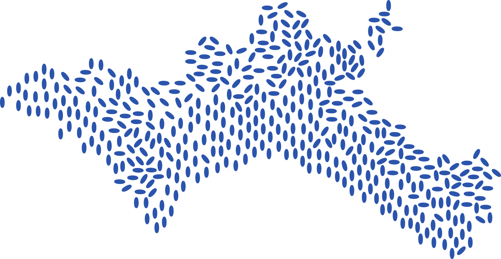
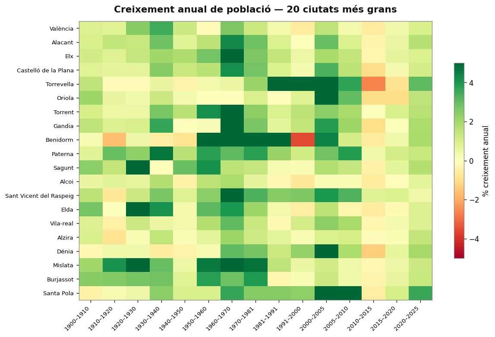
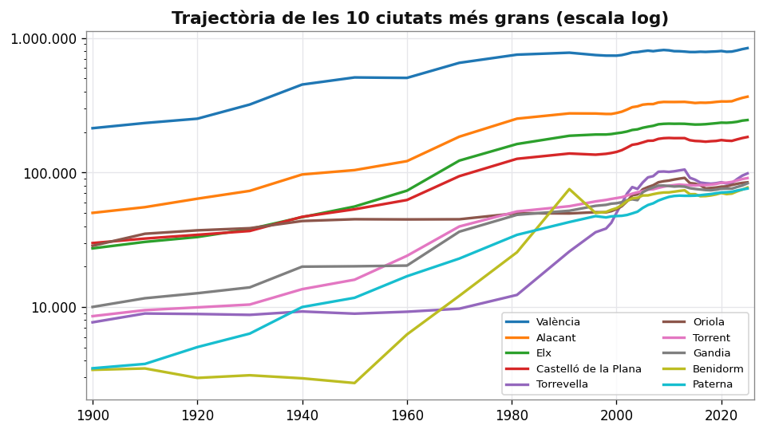
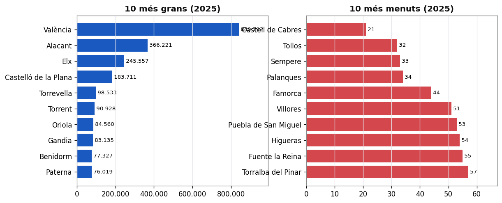
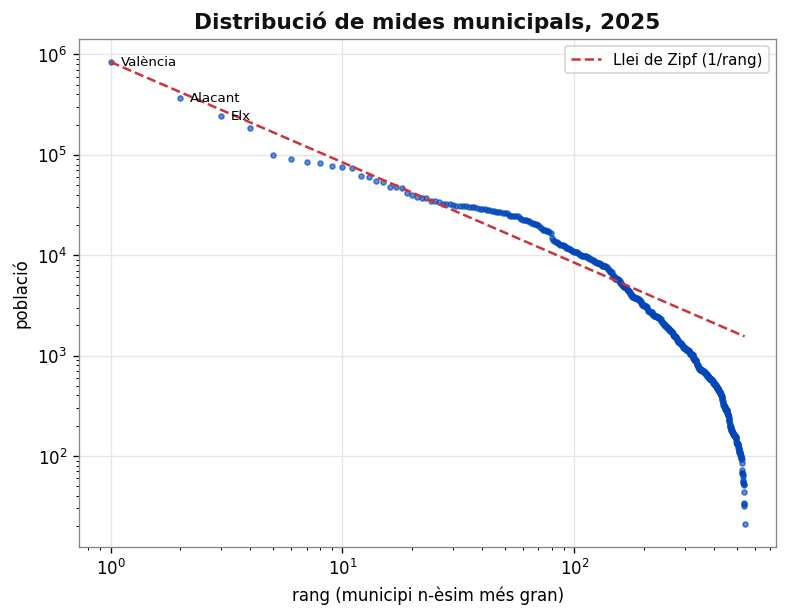

Població Valenciana
 Visualització
Visualització

Evolució de les ciutats més grans de la Comunitat Valenciana (1900–2025)
Creixement global


La població de la CV s'ha triplicat en 125 anys; València concentra el gruix i Alacant és la que més accelera.
Qui creix i qui perd



El litoral turístic es dispara (Benidorm +2.700 % des de 1950) mentre l'interior es despobla. Els heatmaps mostren el creixement anual mitjà: l'èxode rural de l'interior (1950–1981), el boom del desarrollisme, la bambolla de la construcció (2000–2010), la crisi (2010–2015) i la recuperació recent.
El mapa del despoblament

Canvi de població per municipi (1950→2025): la costa creix (verd), l'interior es buida (roig). La «Comunitat Valenciana buidada».
🗺️ Mapa interactiu — passa el ratolí per veure cada municipi.
Ciutats i distribució



Les mides municipals segueixen de prop la llei de Zipf: el segon municipi té ~½ del primer, el tercer ~⅓, etc.
 Què és això?
Què és això?
Un dataset consolidat amb la població de cada municipi de la Comunitat Valenciana des de 1900 fins a 2025. Combina dades dels censos històrics (1900–1991) i del padró municipal continu (1996–2025) publicats per l'INE. Les dades s'actualitzen automàticament cada trimestre via l'API de l'INE.
| Alacant | Castelló | València |
| 141 municipis | 135 municipis | 266 municipis |
 El dataset
El dataset
Fitxer CSV llest per a usar (21.032 registres · 678 municipis · UTF-8 · separat per comes).
⬇️ Descarrega valencianpop.csv · 📂 Codi i documentació al repositori